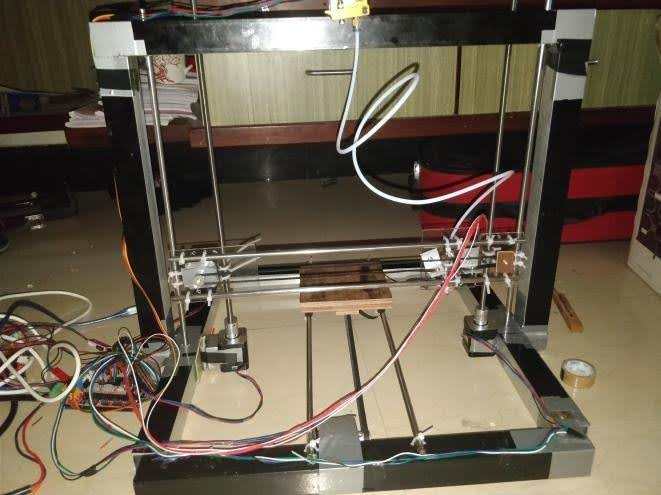

Problem Statement
Commercial 3D printers hide a lot of the mechanical and control tradeoffs behind polished hardware. This project set out to build a single extruder printer from the ground up to understand motion systems, extrusion consistency, thermal control, firmware tuning, and print calibration.
Approach
The printer was designed as a practical mechatronics system: rigid frame first, then controlled motion, then extrusion and temperature stability. Each subsystem was assembled and tested independently before full printer calibration.
Solution

- Designed and assembled the frame, carriage, bed, and extruder mount.
- Integrated stepper motors, end stops, heated bed, hot end, and controller electronics.
- Configured firmware parameters for axis steps, acceleration, jerk, thermal limits, and homing behavior.
- Calibrated extrusion flow, bed leveling, first-layer adhesion, and print temperature profiles.
Challenges
Mechanical tolerances created the biggest learning curve. Small frame misalignments, belt tension changes, or bed-leveling errors showed up directly in print quality, so the build required iterative measurement, tuning, and test prints.